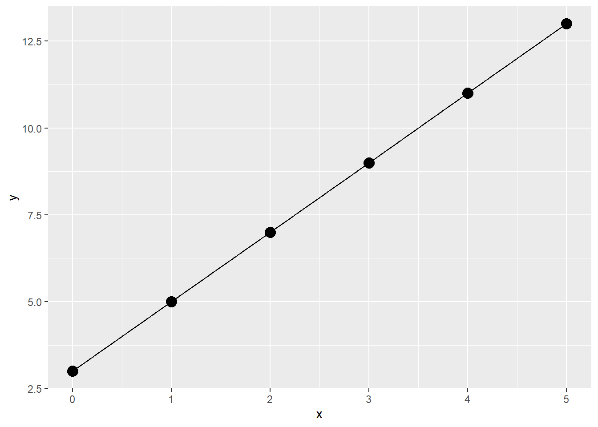
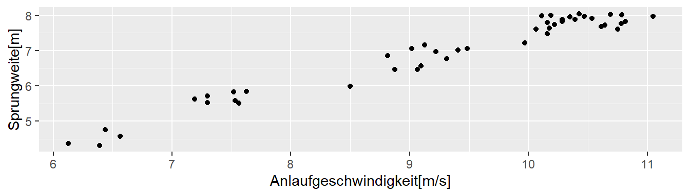
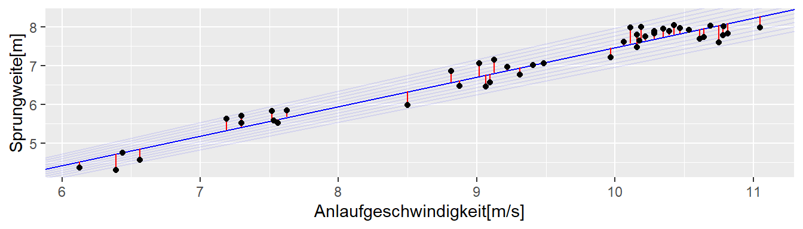

5 Einführung
5.1 Back to school
Wir beginnen mit ein Konzept das wir schon alle kennen. Nämlich die Punkt-Steigungsform aus der Schule (siehe Gleichung 5.1).
\[ y = m x + b \tag{5.1}\]
Wir haben eine abhängige Variable \(y\) und eine lineare Formel \(mx + b\) die den funktionalen Zusammenhang zwischen den Variablen \(y\) und \(x\) beschreibt. Um das Ganz einmal konkret zu machen setzen wir \(m = 2\) und \(b = 3\) fest. Die Formel Gleichung 5.1 wird dann zu:
\[ y = 2 x + 3 \tag{5.2}\]
Um ein paar Werte für \(y\) zu erhalten setzen wir jetzt verschiedene Wert für \(x\) ein indem wir \(x\) in Einserschritten zwischen \([0, \ldots, 5]\) erhöhen. Um die Werte darzustellen verwenden wir zunächst eine Tabelle (vlg. Tabelle 5.1)
| x | y |
|---|---|
| 0 | 3 |
| 1 | 5 |
| 2 | 7 |
| 3 | 9 |
| 4 | 11 |
| 5 | 13 |
Wenig überraschend nimmt \(y\) für den Wert \(x = 0\) den Wert \(3\) an und z.B. für den Wert \(x = 3\) nimmt \(y\) den Wert \(2 \cdot 3 + 3 = 9\) an.
TODO: Einführung eines Index \(i\)
Eine andere Darstellungsform ist naturlich eine graphische Darstellung in dem wir die Werte von \(y\) gegen \(x\) auf einem Graphen abtragen (siehe Abbildung 5.1).

Wiederum wenig überraschen sehen wir einen linearen Zuwachs der \(y\)-Wert mit den größerwerdenden \(x\)-Werte. Da in der Definition der Formel Gleichung 5.2 nirgends festgelt wurde, dass diese nur für ganzzahlige \(x\)-Werte gilt, haben wir direkt eine Gerade durch die Punkte gelegt. Hier wird auch die Bedeutung von \(m\) und \(b\) direkt klar. Die Variable \(m\) bestimmt die Steigung der Gleichung während \(b\) den y-Achsenabschnitt beschreibt.
Definition 5.1 (\(y\)-Achsenabschnitt) Der y-Achsenabschnitt ist der Wert den \(y\) einnimmt wenn \(x\) den Wert \(0\) annimmt. Sei \(y\) durch eine lineare Gleichung \(y = mx + b\) definiert, dann wird der y-Achsenabschnitt durch den Wert \(b\) bestimmt.
Die Variable \(m\) dahingehend bestimmt die Steigung der Gerade.
Definition 5.2 Wenn \(y\) durch eine lineare Gleichung \(y = mx + b\) definiert ist, dann bestimmt die Variable \(m\) die Steiung der dazugehörenden Gerade. D.h. wenn sich die Variable \(x\) um einen Einheit vergrößert (verkleinert) wird der Wert von \(y\) um \(m\) Einheiten größer (kleiner). Gilt \(m < 0\) dann umgekehrt.
Diese beiden trivialen Konzepte mit eigenen Definitionen zu versehen erscheint im ersten Moment vielleicht etwas übertrieben. Wie sich allerdings später zeigen wird, sind diese beiden Einsichten immer wieder zentral wenn es um die Interpretation von linearen statistischen Modellen geht.
5.2 Einfaches Beispiel - Daten
| jump_m | v_ms |
|---|---|
| 4.36 | 6.13 |
| 4.31 | 6.39 |
| 4.56 | 6.56 |
| 4.75 | 6.44 |
| 5.52 | 7.30 |
| 5.63 | 7.19 |
| 5.70 | 7.30 |
5.3 Einfaches Beispiel - Grafik

5.4 Einfaches Beispiel - Regressionsgerade

5.5 Loss function
\[ \sum_{i=1}^n(y_i - (\beta_0 + \beta_1 v_i))^2 \]
\[ y = -0.14 + 0.76 \times v \]
5.6 Regression in R
5.6.1 Model fitten mit lm()
mod <- lm(jump_m ~ v_ms, data = jump)
mod
Call:
lm(formula = jump_m ~ v_ms, data = jump)
Coefficients:
(Intercept) v_ms
-0.1385 0.7611 5.7 Formelsyntax in lm(y ~ x, data)
| Modell | Formel | Erklärung |
|---|---|---|
| \(y=\beta_0\) | y ~ 1 |
y-Ab |
| \(y=\beta_0+\beta x\) | y ~ x |
y-Ab und StKoef |
| \(y=\beta_0+\beta_1x_1+\beta_2x_2\) | y ~ x1 + x2 |
y-Ab und 2 StKoe |
y-Ab = y-Achsenabshnitt, StKoef = Steigungskoeffizient
5.8 lm()-fit mit summary() inspizieren
summary(mod)
Call:
lm(formula = jump_m ~ v_ms, data = jump)
Residuals:
Min 1Q Median 3Q Max
-0.44314 -0.22564 0.02678 0.19638 0.42148
Coefficients:
Estimate Std. Error t value Pr(>|t|)
(Intercept) -0.13854 0.23261 -0.596 0.555
v_ms 0.76110 0.02479 30.702 <2e-16 ***
---
Signif. codes: 0 '***' 0.001 '**' 0.01 '*' 0.05 '.' 0.1 ' ' 1
Residual standard error: 0.2369 on 43 degrees of freedom
Multiple R-squared: 0.9564, Adjusted R-squared: 0.9554
F-statistic: 942.6 on 1 and 43 DF, p-value: < 2.2e-165.9 lm() und ein paar friends…
Koeffizienten und Standardschätzfehler
coef(mod)(Intercept) v_ms
-0.1385361 0.7611019 sigma(mod)[1] 0.2369055Residuen
# Nur die ersten beiden
# Residuen
# damit der Ausdruck
# auf das Slide passt.
resid(mod)[1:2] 1 2
-0.1626772 -0.4124884